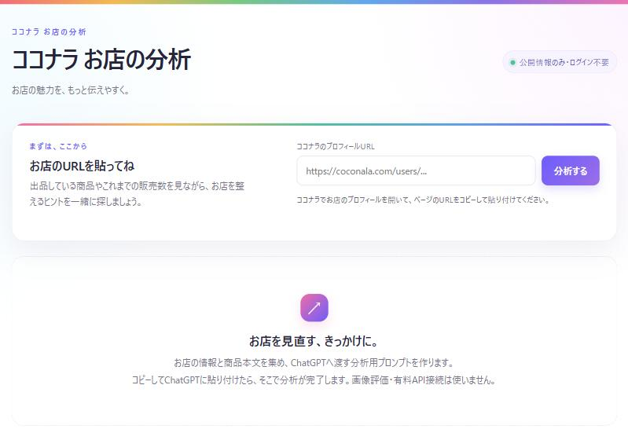

このステップのゴール
月に1回お店を見直して直すところを1つ決め、価格の違う商品を増やしながらお店を育てる。
このステップが大事な理由
出品したときに「これがいい」と思ったタイトルや画像が、お客様にも響いているとは限りません。数字を見て少しずつ直していくお店が伸びていきます。値上げは慎重にして、価格の違う商品を増やしながらお店を育てていきましょう。
1
お店の分析で、月に1回見直す
虹オフィスツール
- ココナラで自分のプロフィールページを開き、URLをコピーするURLのコピーのしかたはSTEP 2にあります
- ツールにURLを貼って「分析する」を押すお店の公開情報と商品の本文を集めます。ログイン情報やお客様とのやりとりは読み取りません
- できたプロンプトをコピーして、ChatGPTに貼って送る
- 返ってきた「お店の強み」「商品それぞれの役割」「改善案」を読む
- 改善案の中から、今月直すことを1つだけ選ぶ一度にたくさん変えると、何が効いたのか分からなくなります
2
直すところに合わせて、戻るステップを選ぶ
商品ページは見られているのに、買われないSTEP 4 に戻る本文・価格・検索の言葉を見直す
商品ページがあまり開かれないSTEP 5 に戻る画像を差し替える。タイトルも見直す
そもそも見に来る人が少ないSTEP 9 に戻るブログやSNSで入口を増やす
お店全体の方向がぼやけているSTEP 2 に戻る参考のお店を見直し、テーマを絞り直す
商品ごとの閲覧数・お気に入り数・販売数は、ココナラの出品者用の管理画面で見られます。分析の結果と合わせて見ると、どこを直すか決めやすくなります。
3
値上げより、商品ごとに価格を変える
今ある商品を値上げすると、注文が減ったり、リピーターさんが離れたりすることがあります。値上げは慎重にして、利益を増やしたいときは価格の違う商品を増やすことで対応します。
入口は残す500〜1,500円初めての人が入りやすいように、入口の商品は価格を変えずに残します
ミドルを増やす3,000〜8,000円反応がいい悩みの切り口で、項目を増やした鑑定などを追加します
バックを育てる15,000円〜リピーターさんが増えてきたら、継続鑑定やパッケージを充実させます
ランクは直近3ヶ月で決まります
入口の商品を値上げして注文が減ると、件数や販売額が落ちてランクを保てなくなることもあります（STEP 0）。入口はそのままにして、ミドルやバックの商品で利益を作りましょう。
どうしても今ある商品の価格を変えるときは、少しずつ変えて、リピーターさんには前もって知らせると離れにくくなります。
4
商品を入れ替えて育てる
最初からたくさん出品しておくと、「どの悩みが響くか」が数字で分かるようになります。反応を見ながら、商品を育てていきましょう。
- 反応を比べる：閲覧数と注文数を見比べて、反応がいい切り口に力を入れます。
- 反応がいい切り口を広げる：よく売れる入口の商品があれば、同じ悩みでミドル・バックの商品を用意します。
- 反応がない商品は直す：見られていなければ画像とタイトル、見られているのに買われなければ本文と価格を見直します（上の「戻るステップ」を見てください）。
- 入口の商品は必ず残す：どんなに商品を増やしても、気軽に頼める入口は残します。
増やしすぎに注意
商品を増やして、返事が遅れたり対応が雑になったりすると、評価を落とします。ていねいに対応しきれる数を保ちましょう。
5
うまくいくコツ
- 見直す日を決めておく：「毎月1日」のように決めて、カレンダーに入れておきます。
- 直す前の状態をメモしておく：タイトルや価格を変える前に、元の文と数字を残しておくと、翌月に効果を比べられます。
- 強みも読む：改善案だけでなく「お店の強み」も読みましょう。強みは、プロフィールやブログで伸ばしていけます。
✓
宿題（毎月）
日付・直したこと・その前の状態を1行ずつ
ここに書いた内容は、このブラウザの中だけに保存されます。